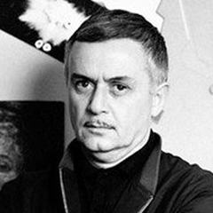

1960'lar – 1980'ler
Sovyet Şiirsel Sineması
Resmi baskıya rağmen ruhani, kişisel ve şiirsel bir sinema peşinde koşan Sovyet yönetmenler.
1953'te Stalin'in ölümünden sonra Sovyet sineması yeniden nefes almaya başladı. 1960'larda ve 70'lerde Gürcistan, Ermenistan ve Ukrayna'dan yönetmenler, metafor, halk miti ve ressam gözüyle çekilmiş görüntülerle dolu filmler yaptı, sansürü çoğu kez simgelerle konuşarak aştı. Sergei Parajanov'un Nar Rengi'si (1969) bir Ermeni şairin yaşamını canlı tablolar dizisi olarak ele aldı, Tarkovsky'nin Andrei Rublev'i ve Ayna'sı inanç, bellek ve zaman üzerine düşündü; Larisa Shepitko, Elem Klimov, Kira Muratova ve Otar Iosseliani kendi seslerini getirdi. Filmlerin çoğu kesildi, yasaklandı ya da rafa kaldırıldı ve ancak sonradan gösterilebildi.
- Nerede
- SSCB; özellikle Rusya, Ukrayna, Gürcistan ve Ermenistan
- Ne zaman
- 1950'lerin sonundan 1980'lere
- Önemli isimler
- Andrei Tarkovsky, Sergei Parajanov, Larisa Shepitko, Elem Klimov, Kira Muratova, Otar Iosseliani, Tengiz Abuladze
- Başyapıtlar
- Unutulmuş Ataların Gölgeleri (1965), Andrei Rublev (1966), Nar Rengi (1969), Gel ve Gör (1985)
- Miras
- Filmin manevi, ressam gözlü bir şiir olabileceğini gösterdi; sonraki sanat sinemasını güçlü biçimde etkiledi
Nelere bakmalı
- Şiir olarak görüntü: yavaş hareket, uzun planlar ve zengin simgeler
- Dinî, halk kültürü ve tarihsel temalar
- Siyaseti kasıtlı dolaylı biçimde anlatma
Ünlü Yönetmenler
 Larisa ShepitkoSSCB
Larisa ShepitkoSSCB Andrei TarkovskySSCB
Andrei TarkovskySSCB Sergei ParajanovSSCB (Ermenistan / Gürcistan / Ukrayna)
Sergei ParajanovSSCB (Ermenistan / Gürcistan / Ukrayna) Elem KlimovSSCB
Elem KlimovSSCB Kira MuratovaSSCB / Ukrayna
Kira MuratovaSSCB / Ukrayna Otar IosselianiGürcistan / Fransa
Otar IosselianiGürcistan / Fransa Mikhail KalatozovSSCB
Mikhail KalatozovSSCB Gleb PanfilovSSCB / Rusya
Gleb PanfilovSSCB / Rusya Aleksei GermanSSCB / Rusya
Aleksei GermanSSCB / Rusya
Tengiz AbuladzeGürcistan Andrei KonchalovskySSCB / Rusya
Andrei KonchalovskySSCB / RusyaEn iyi filmler · 64 film
- Mother (1990) 1990 · Gleb Panfilov · IMDb 8,4
- The Cranes Are Flying 1957 · Mikhail Kalatozov · IMDb 8,3
- Come and See 1985 · Elem Klimov · IMDb 8,3
- Me, Grandma, Iliko and Ilarion 1962 · Tengiz Abuladze · IMDb 8,3
- I Am Cuba 1964 · Mikhail Kalatozov · IMDb 8,2
- The Ascent 1977 · Larisa Shepitko · IMDb 8,2
- Stalker 1979 · Andrei Tarkovsky · IMDb 8,0
- Ivan's Childhood 1962 · Andrei Tarkovsky · IMDb 8,0
- Andrei Rublev 1966 · Andrei Tarkovsky · IMDb 8,0
- Repentance 1984 · Tengiz Abuladze · IMDb 8,0
- The Wishing Tree 1977 · Tengiz Abuladze · IMDb 8,0
- Solaris 1972 · Andrei Tarkovsky · IMDb 7,9
- Mirror 1975 · Andrei Tarkovsky · IMDb 7,9
- Nostalghia 1983 · Andrei Tarkovsky · IMDb 7,9
- Siberiade 1979 · Andrei Konchalovsky · IMDb 7,9
- The Sacrifice 1986 · Andrei Tarkovsky · IMDb 7,8
- Shadows of Forgotten Ancestors 1965 · Sergei Parajanov · IMDb 7,8
- Welcome, or No Trespassing 1964 · Elem Klimov · IMDb 7,8
- Twenty Days Without War 1976 · Aleksei German · IMDb 7,7
- Falling Leaves (1966) 1966 · Otar Iosseliani · IMDb 7,6
- Magdana's Donkey 1955 · Tengiz Abuladze · IMDb 7,6
- Salt for Svanetia 1930 · Mikhail Kalatozov · IMDb 7,5
- Wings 1966 · Larisa Shepitko · IMDb 7,5
- The Color of Pomegranates 1969 · Sergei Parajanov · IMDb 7,5
- Farewell 1983 · Elem Klimov · IMDb 7,5
- The Tuner 2004 · Kira Muratova · IMDb 7,5
- Vassa 1983 · Gleb Panfilov · IMDb 7,5
- The First Teacher 1965 · Andrei Konchalovsky · IMDb 7,5
- The Steamroller and the Violin 1961 · Andrei Tarkovsky · IMDb 7,4
- My Friend Ivan Lapshin 1984 · Aleksei German · IMDb 7,4
- The Legend of Suram Fortress 1985 · Sergei Parajanov · IMDb 7,3
- Dear Comrades! 2020 · Andrei Konchalovsky · IMDb 7,3
- Ashik Kerib 1988 · Sergei Parajanov · IMDb 7,2
- Pastorale 1976 · Otar Iosseliani · IMDb 7,2
- The Theme 1979 · Gleb Panfilov · IMDb 7,2
- Khrustalyov, My Car! 1998 · Aleksei German · IMDb 7,2
- Uncle Vanya 1970 · Andrei Konchalovsky · IMDb 7,2
- Runaway Train 1985 · Andrei Konchalovsky · IMDb 7,2
- Brief Encounters 1967 · Kira Muratova · IMDb 7,1
- Farewell, Home Sweet Home 1999 · Otar Iosseliani · IMDb 7,1
- Brigands: Chapter VII 1996 · Otar Iosseliani · IMDb 7,0
- House of Fools 2002 · Andrei Konchalovsky · IMDb 7,0
- The Postman's White Nights 2014 · Andrei Konchalovsky · IMDb 7,0
- Sport, Sport, Sport 1970 · Elem Klimov · IMDb 6,9
- The Red Tent 1969 · Mikhail Kalatozov · IMDb 6,8
- Among Grey Stones 1983 · Kira Muratova · IMDb 6,8
- Favourites of the Moon 1984 · Otar Iosseliani · IMDb 6,8
- Monday Morning 2002 · Otar Iosseliani · IMDb 6,7
- Ukrainian Rhapsody 1961 · Sergei Parajanov · IMDb 6,6
- Asthenic Syndrome 1989 · Kira Muratova · IMDb 6,5
- Hard to Be a God 2013 · Aleksei German · IMDb 6,5
- Gardens in Autumn 2006 · Otar Iosseliani · IMDb 6,4
- Andriesh 1954 · Sergei Parajanov · IMDb 6,3
- Long Farewells 1971 · Kira Muratova
- The Debut 1970 · Gleb Panfilov
- The Plea 1968 · Tengiz Abuladze
- I Wish to Speak 1976 · Gleb Panfilov
- Kiev Frescoes 1966 · Sergei Parajanov
- The Story of Asya Klyachina 1967 · Andrei Konchalovsky
- The Letter That Was Never Sent 1959 · Mikhail Kalatozov
- Trial on the Road 1971 · Aleksei German
- Chasing Butterflies 1992 · Otar Iosseliani
- Agony 1975 · Elem Klimov
- Valery Chkalov 1941 · Mikhail Kalatozov